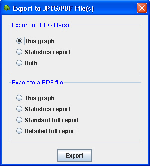

Dialog to save the file
可将报表全部或部分导出到 JPEG 或 PDF 文件中。通过这一功能，可创建报表的电子副本，以便与他人共享或在网络上传送。如需进行导出操作，请选择菜单项“File -> Export To PDF（文件 -> 导出到 PDF 文件）”。此时将出现“Export to JPEG/PDF File(s) 对话框。”

在这一对话框中，可选择：
• 将主图表和/或主统计报表导出到 JPEG 文件中。
• 将主图表、主统计报表、标准全报表（或全报表）或详细全报表导出到一个 PDF 文件中。只有在当前打开的记录文件的产生时间超过 1 天时，才能选择详细全报表。详细报表包含标准报表的所有页面，另外还包括每一天的图表和统计数据。
如需进行导出操作，请点击所需选项旁边的单选按钮，然后单击“Export”按钮。此时可以看到如下所示的另一个对话框，其中可对文件进行保存操作。
Dialog to save the file
如选择将图表和统计报表导出到 JPEG 文件中，则程序会提示单独保存两个文件，一个文件用于保存图表，另一个用于保存统计报表。如选择其它选项，则程序会提示只需保存一个文件。程序将记住所选的最后一次保存文件的位置。